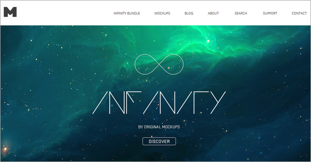
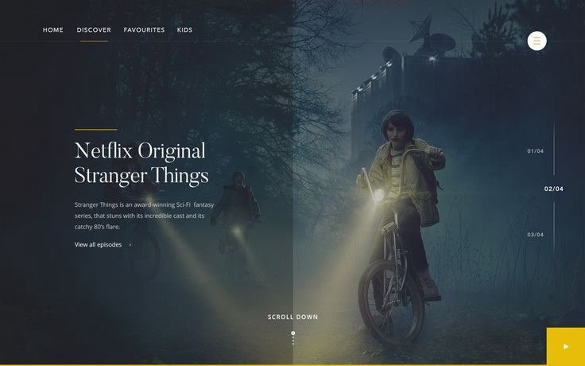
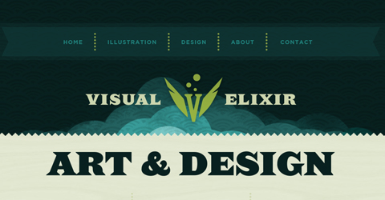

Luxury Modern Design
We make web and mobile design
One of the interesting trend which I noticed recently is using a attractive footer to provide a perfect ending to your website’s presentation. Modern age designers love to experiment with things and observe how people interact with their work. Even though this is not a common trend to follow but still as the new design styles come up, and as more and more designers notice them and make use of them in their work, this kind of new trends emerge. In this showcase, you’ll find a variety of highly-creative, beautiful, and most importantly inspirational footer designs by which you can learn a thing or two.
Page footer or simply footer in typography is that material which is separated from the main body of text and appears at the bottom of a printed page. A Web designer always need to improve his design and assembling skills, one can always think that how other designers and developers achieve both beautiful and creative designs. And to improve your design skills all the time you need good sources of inspiration to have a proper vision and to learn from masters who have a profound understanding of design field.
A good web designer always looking for ways to get inspired by new trends as Professionalism is built upon knowledge and experience. The basic point behind this post is to show you that you don’t need to just follow the routine methods for choosing footers, there are lots of creative work out there to get inspire and break those routine bounds of choosing default footers.
  Luxury Modern Design
We make web and mobile design
One of the interesting trend which I noticed recently is using a attractive footer to provide a perfect ending to your website’s presentation. Modern age designers love to experiment with things and observe how people interact with their work. Even though this is not a common trend to follow but still as the new design styles come up, and as more and more designers notice them and make use of them in their work, this kind of new trends emerge. In this showcase, you’ll find a variety of highly-creative, beautiful, and most importantly inspirational footer designs by which you can learn a thing or two.
page footer or simply footer in typography is that material which is separated from the main body of text and appears at the bottom of a printed page. A Web designer always need to improve his design and assembling skills, one can always think that how other designers and developers achieve both beautiful and creative designs. And to improve your design skills all the time you need good sources of inspiration to have a proper vision and to learn from masters who have a profound understanding of design field.
A good web designer always looking for ways to get inspired by new trends as Professionalism is built upon knowledge and experience. The basic point behind this post is to show you that you don’t need to just follow the routine methods for choosing footers, there are lots of creative work out there to get inspire and break those routine bounds of choosing default footers.